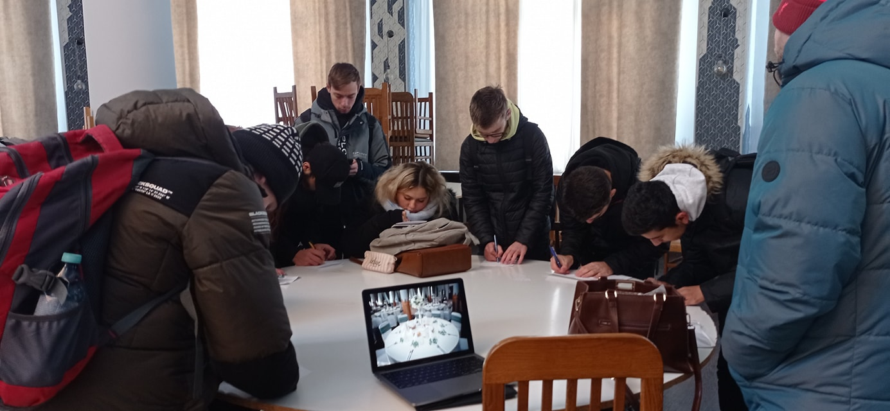
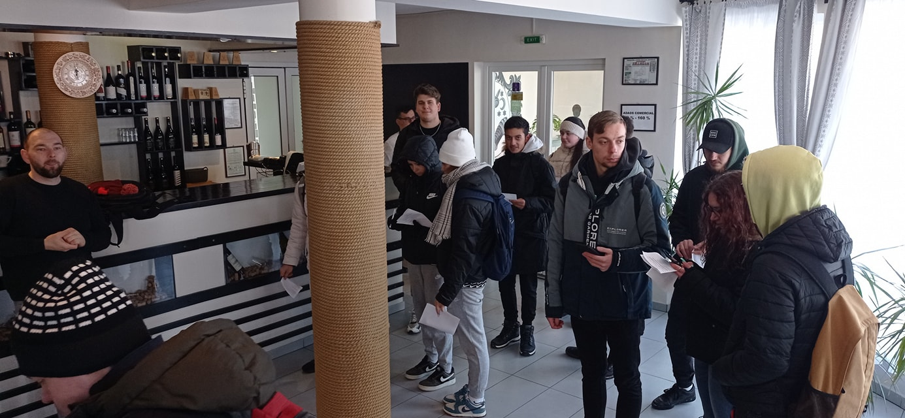
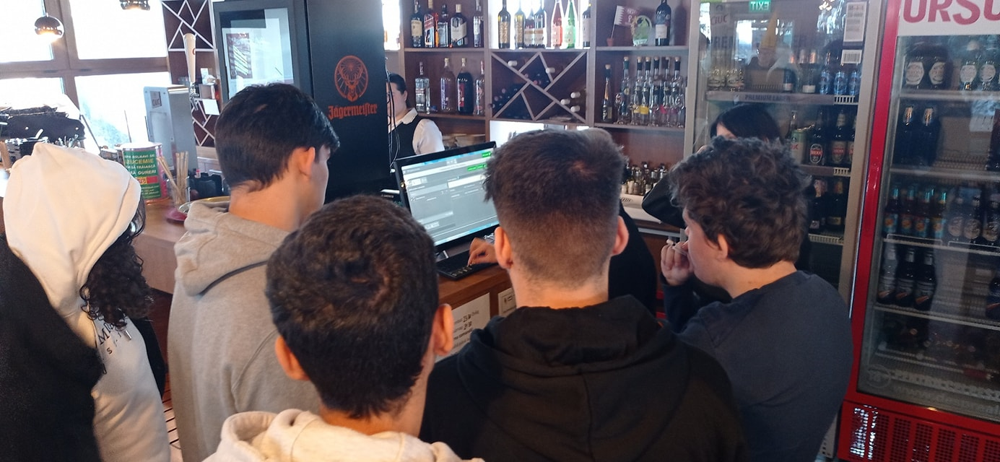

Elevii clasei a XII-a A, au participat la un maraton al vizitelor de studiu la unitățile de alimentație publică și turism în vederea documentării pentru realizarea proiectelor de cerificare a calificării de nivel 4.
  